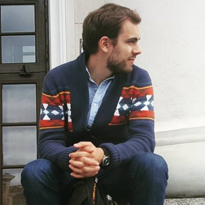

Vaidotas Piekus



About Me
I am a full-stack developer currently based Germany. I build performant, high quality applications in React and TypeScript. I work at Remote helping to build application platform that enables remote work globally.
When I am not programming I enjoy obsessing over photography, keyboards and coffee.
Now
Inspired by Derek Sivers nownownow page, here is what I am doing right now as of March, 2023:
- Getting back to minimalism in my tools and removing custom setups to simplify life.
- Reading the Life by Keith Richards. That's quite a life.
- Reading the Designing Data-Intensive Applications by Martin Kleppmann, very extensive overview on all things that are not frontend dev, its good.